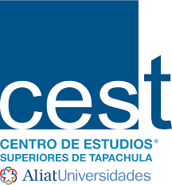

tipos de universidades en mexico
México tiene muchas instituciones de educación superior que están dispuestas a mostrar su calidad en su oferta académica para la formación de profesionales, y cada opción tiene características que permiten agruparlas según los tipos que te mostraremos a continuación.
universidades publicas
Las universidades en México a nivel público son la primera opción de los estudiantes, ya que al ser financiadas por el Estado Mexicano se abaratan los costos de cursar una carrera.
Es por esta razón que se deben cumplir con requisitos de postulación para filtrar la demanda del estudiantado, y entre estas tenemos:
Lista de Universidades Públicas en México
| Arkansas State University Campus Querétaro | Universidad Tecnológica del Valle de Toluca | UNAM – Universidad Nacional Autónoma de México | Universidad Tecnológica de Nezahualcoyotl | Universidad Tecnologica del Sur del Estado de México | BUAP – Benemérita Universidad Autónoma de Puebla | Universidad Autónoma de Tamaulipas | Universidad del Tepeyac | Benemerita Escuela Normal Urbana Federal Fronteriza de Mexicali | Universidad Tecnológica de Puebla | Universidad Autónoma Indígena de México | UMSNH – Universidad Michoacana de San Nicolás de Hidalgo | Universidad Autónoma de Chiapas | Universidad Tecnológica de Hermosillo | Universidad Autónoma Chapingo | Universidad Pedagógica Nacional Unidad 112 | UNED – Universidad Nacional de Educación a Distancia (Master Fordies) | UTVM Universidad Tecnológica del Valle Mezquital | UNICACH – Universidad de Ciencias y Artes de Chiapas | Escuela Normal de Zacatecas «Manuel Ávila Camacho» | UTTT – Universidad Tecnológica Tula – Tepeji | Universidad Politécnica de Pachuca | Universidad Tecnológica de Tlaxcala | UACJ – Universidad Autónoma Ciudad Juárez | Universidad Tecnológica del Valle de Toluca | CM – El Colegio de México | Universidad Tecnológica de Nayarit |
Lista de Universidades Privadas en México
| Universidad ETAC | |
| UNEA – Universidad de Estudios Avanzados | |
| CEST – Centro de Estudios Superiores de Tapachula |  |